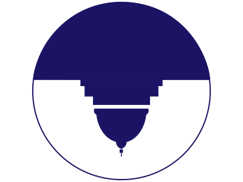

<!DOCTYPE html>

<html lang="en">

<head>
    <meta name="viewport" content="width=device-width, initial-scale=1.0"/>
    <link href='https://fonts.googleapis.com/css?family=Roboto:400,300,700' rel='stylesheet' type='text/css' />
    <title>Andrea&rsquo;s Portfolio: Call Congress Now</title>
    <link href="css/reset.css" rel="stylesheet" />
    <link href="css/stylesheet.css" rel="stylesheet" />
    <link rel="icon" type="image/png" href="images/portfolio-icon.png" />
</head>

</html>

<body class="portfolio">

    <nav class="portfolio-nav">
        <section class="portfolio-nav-left-side">
            <h1 class="portfolio-nav-name">Andrea Leigh Williamson</h1>
            
        </section>
        <div class="portfolio-nav-links">
            <a data-scroll data-options='{ "easing": "easeOutCubic" }' class="portfolio-nav-link" href="#portfolio">PORTFOLIO</a>
            <a data-scroll data-options='{ "easing": "easeOutCubic" }' class="portfolio-nav-link" href="#about">ABOUT/CONTACT</a>
        </div>
    </nav>

    <section class="portfolio-ccn-body">
        <div class="portfolio-ccn-intro">
            <h2 class="portfolio-ccn-title"><span class="portfolio-ccn-title-emphasis">CASE STUDY:</span> Call Congress Now</h2>
            <p class="portfolio-ccn-intro-blurb">Call Congress Now is a responsive web app I designed and co-developed. Its purpose is to encourage citizens to call their Representatives and Senators for issues they care about. The app provides calling information in a user-friendly way. </p>
            <a class="portfolio-ccn-link" href="https://www.callcongressnow.org/" rel="link to Call Congress Now" target="_blank">
                
            </a>
        </div>
        <div class="portfolio-ccn-process">
            <h3 class="portfolio-ccn-process-title">The Design Process: Key Steps</h3>
            <p class="portfolio-ccn-process-blurb">Call Congress Now was a challenging but rewarding app to design and build. I have included key points in the design process below.</p>
            <h3 class="portfolio-ccn-process-header">Discovery</h3>
            <p class="portfolio-ccn-process-blurb">In the weeks following election night, I vowed to get more involved in politics. I came across long Twitter threads about the impact of picking up the phone and calling Congress.</p>
            <p class="portfolio-ccn-process-blurb">My friend and I started looking into how to go about contacting Congress. We were startled by how little information about it existed. Then we realized that we could do something about that.</p>
            <h3 class="portfolio-ccn-process-header">Defining The Idea</h3>
            <p class="portfolio-ccn-process-blurb portfolio-ccn-process-blurb-emphasis">We decided to make a responsive web app that would provide a solution to the following questions:</p>
            <ul class="portfolio-ccn-process-list">
                <li class="portfolio-ccn-process-list-item">What would a user-friendly app with calling information look like?</li>
                <li class="portfolio-ccn-process-list-item">How do we motivate our peers to pick up the phone?</li>
                <li class="portfolio-ccn-process-list-item">Here is a storyboard I created by hand to help define the types of users our app was targeting:</li>
            </ul>
            
            <h3 class="portfolio-ccn-process-header">Design</h3>
            <p class="portfolio-ccn-process-blurb portfolio-ccn-process-blurb-emphasis">During the design phase, I created the following:</p>
            <ul class="portfolio-ccn-process-list">
                <li class="portfolio-ccn-process-list-item">Quick paper/pencil wireframes</li>
                <li class="portfolio-ccn-process-list-item">High-fidelity mockups using Adobe Illustrator</li>
                <li class="portfolio-ccn-process-list-item">HTML/SCSS prototypes</li>
                <li class="portfolio-ccn-process-list-item">Branding, such as defining the color scheme, finding a background hero photo, and sketching out an icon (which was inspired by the upside-down flag from House of Cards).</li>
            </ul>
            
            <h3 class="portfolio-ccn-process-header">User Research</h3>
            <p class="portfolio-ccn-process-blurb">While designing, I conducted informal interviews with family, friends, and friendly-looking strangers at coffee shops. I wanted to know what motivated them to care about politics, but, like me prior to the election, stopped them from getting more involved.</p>
            <p class="portfolio-ccn-process-blurb portfolio-ccn-process-blurb-emphasis">Here was the general consensus:</p>
            <ul class="portfolio-ccn-process-list">
                <li class="portfolio-ccn-process-list-item">I don&rsquo;t know what specific actions I can take besides voting and donating to causes I care about</li>
                <li class="portfolio-ccn-process-list-item">I only want to consider options that aren&rsquo;t a huge time sink</li>
                <li class="portfolio-ccn-process-list-item">I want to know that my actions will mean something</li>
            </ul>
            <p class="portfolio-ccn-process-blurb"><span class="portfolio-ccn-process-blurb-emphasis">Conclusion: </span>Answer the question, Why should I do this? </p>
        </div>

    </section>

    <footer class="portfolio-footer" id="about">
        <section class="portfolio-footer-about">
            <h3 class="portfolio-footer-about-title">ABOUT ANDREA</h3>
            <p class="portfolio-footer-about-blurb ">I am a UX/UI Designer in Cambridge, MA. Graffiti alley, picture above, is a beloved place of mine in Central Square. It is always changing, just like design.</p>
            <p class="portfolio-footer-about-blurb ">I enjoy solving complex design problems and thrive on teamwork. I have experience with education and healthcare startups and have also previously worked in healthcare. My diverse work history gives me a unique perspective on the importance of collaboration and empathy. <a class="portfolio-footer-download-cv" href="https://github.com/andrealeigh/portfolio/raw/master/UX-UI%20Designer%20Resume.pdf">Download my resume</a></p>
        </section>
        <section class="portfolio-footer-contact">
            <div class="portfolio-footer-social-media">
                <a class="portfolio-footer-social-media-icon" href="https://www.linkedin.com/in/andrea-leigh-williamson" target="_blank"></a>
                <a class="portfolio-footer-social-media-icon" href="https://dribbble.com/AndreaLeigh111" target="_blank"></a>
                <a class="portfolio-footer-social-media-icon" href="https://github.com/andrealeigh" target="_blank"></a>
            </div>
            <h5 class="portfolio-footer-email">leigh.andrea@gmail.com</h5>
        </section>
    </footer>

    <script src="js/smooth-scroll.min.js"></script>
    <script>smoothScroll.init();</script>

</body>
